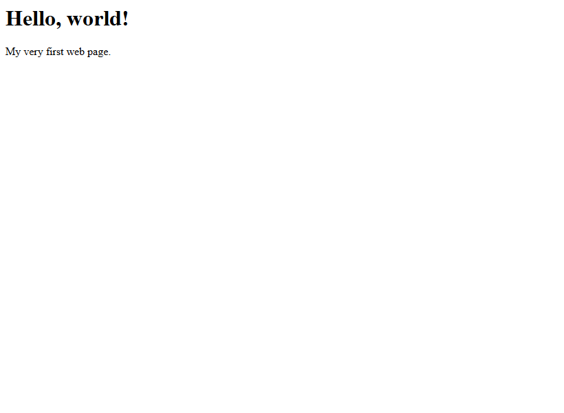

Lesson 1 · Getting Started
Setting Up Your Computer
Before writing code you need two tools: a code editor to write it and a web browser to view it. In this lesson you will install both, create your project folders and make your very first web page.
- About 30 minutes
- Absolute beginner
- Creates:
practice/first.html
By the end of this lesson you will be able to
- Install Visual Studio Code and the Live Server extension.
- Create folders and files for a website.
- Open a folder in VS Code, write some code and save it.
- View your page in a web browser.
How websites work (in 60 seconds)
A website is just a collection of text files. Your web browser (Chrome, Edge, Safari, Firefox…) reads those files and turns them into the pages you see. Two kinds of files do almost all the work:
- HTML files (ending in
.html) hold the content and structure: headings, paragraphs, images, links, menus. Think of HTML as the skeleton of a house. - CSS files (ending in
.css) hold the style: colours, fonts, sizes, spacing, layout. CSS is the paint, wallpaper and furniture.
Because they are plain text, you can write them in any text editor. A code editor just makes it much easier, with colours, auto-complete and error hints.
New terms
Code editor — a program for writing code (like Microsoft Word, but for code).
Browser — the program you use to visit websites.
File extension — the letters after the dot in a file name, like .html or .css. They tell the computer what kind of file it is.
Install a modern web browser
You almost certainly have one already. This guide's screenshots use Google Chrome, but Microsoft Edge, Firefox and Safari all work.
If you want Chrome: go to google.com/chrome, click Download Chrome and run the installer.
Install Visual Studio Code
Visual Studio Code (“VS Code”) is a free code editor made by Microsoft. It is what most professional web developers use.
- Go to code.visualstudio.com.
- Click the big blue Download button. The site picks the right version for your computer.
- Windows: run the downloaded
VSCodeUserSetup…exe. Accept the agreement and click Next through the screens. On the “Select Additional Tasks” screen, tick Add “Open with Code” action to Windows Explorer file context menu and Add to PATH. Then click Install. - Mac: open the downloaded
.zip, then drag Visual Studio Code.app into your Applications folder. - Open VS Code. You will see a Welcome tab — you can close it.
Install the Live Server extension
An extension adds extra features to VS Code. Live Server opens your page in the browser and refreshes it automatically every time you save. This is a huge time-saver.
- In VS Code, click the Extensions icon on the far-left bar (it looks like four small squares), or press Ctrl + Shift + X (Cmd + Shift + X on Mac).
- In the search box, type Live Server.
- Choose the one by Ritwick Dey and click Install.
Tip
Live Server is optional. Without it you can still double-click any .html file to open it in your browser — you will just need to press F5 to refresh after each change.
Turn on two helpful settings
Open the File menu (on Mac: Code menu) and click Auto Save so it has a tick next to it. Now VS Code saves your work automatically.
Next, open the View menu and click Word Wrap. Long lines will now wrap onto the next line instead of running off the screen.
Create your project folders
Keep all your web work in one place. We will make a main folder called my-websites with two folders inside it:
- Windows: open File Explorer, go to Documents, right-click an empty area and choose New → Folder. Name it
my-websites. Open it and create two more folders inside:practiceandtechfix-pro. - Mac: open Finder, go to Documents, press Cmd + Shift + N to make a new folder and name it
my-websites. Open it and createpracticeandtechfix-prothe same way.
Common mistake: spaces and capitals in names
Always use lowercase letters and hyphens instead of spaces for web folders and files: my-websites, not My Websites. Web servers treat About.html and about.html as different files, and spaces turn into ugly %20 codes in web addresses.
Open the practice folder in VS Code
- In VS Code, open the File menu and choose Open Folder… (on Mac: File → Open…).
- Find
Documents/my-websites/practice, select it, and click Select Folder (or Open). - If VS Code asks “Do you trust the authors of the files in this folder?”, click Yes, I trust the authors — you are the author!
The left side of VS Code now shows the Explorer panel with your folder name, PRACTICE, at the top. It is empty for now.
Create your first file
- Hover over the
PRACTICEheading in the Explorer panel. Four small icons appear. Click the first one, New File (a page with a plus sign). - Type the name
first.htmland press Enter. The file opens in the editor. - Type exactly this:
<h1>Hello, world!</h1>
<p>My very first web page.</p>Press Ctrl + S (Cmd + S on Mac) to save. A white dot on the file's tab means “not saved yet”; when it disappears, the file is saved.
View it in the browser
With Live Server: right-click inside the editor and choose Open with Live Server. (Or click Go Live in the blue bar at the bottom of VS Code.) Your browser opens the page.
Without Live Server: open your practice folder in File Explorer / Finder and double-click first.html.

Now change the words Hello, world! to your own name and save. With Live Server, the browser updates instantly. 🎉
Checkpoint
These tick boxes are just for you; they reset when you reload the page.
My page shows the code instead of a heading!
Your file is probably called first.html.txt — Windows hides the real extension by default. In File Explorer click View → Show → File name extensions, then rename the file to first.html. Always create files inside VS Code to avoid this.
Practice
- Close VS Code completely, then reopen your
practicefolder using File → Open Recent. - Add a second paragraph to
first.htmlthat says what you hope to build. Save and check the browser.